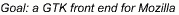

|
|
 |

|
Things left to do
Here are the things that still need to be done to finish the GTK/GNOME
port. This list is not yet complete. As I find things that need to
be done, I'll add them. Dive right in if you want to work on
something. If I know that certian people are working on items on this
list actively, I'll put their names with the tasks and you can contact
them for more information about their progress.
-
Image Handling
-
Non-Pseudo color displays don't work. This means that if you
happen to be running at 8 bits or 24 bits the image library is
initialized improperly. This requires code to be ported over from xfe
or to use the colormap from imlib. It's hard coded right now.
-
Tiled images don't work yet. The code needs to be ported to the gtk calls.
-
Move GtkFixed to GtkLayout. The GtkLayout widget is better suited to
what mozilla tries to do and should be the base widget for the
scrolling window.
-
Layout
-
Resizing the browser window doesn't trigger the page to get layed out again.
-
Frames don't work yet.
-
Forms are untested.
-
Layers are untested.
-
User Interface
-
The Buttons at the top of the browser don't acutually do anything.
-
The menu selections don't do anything.
-
The URL bar doesn't get updated when you follow links.
-
Netscape's home page promply
causes the browser to crash.
-
The timeout
code needs to be cleaned up.
comments to the module owners
|